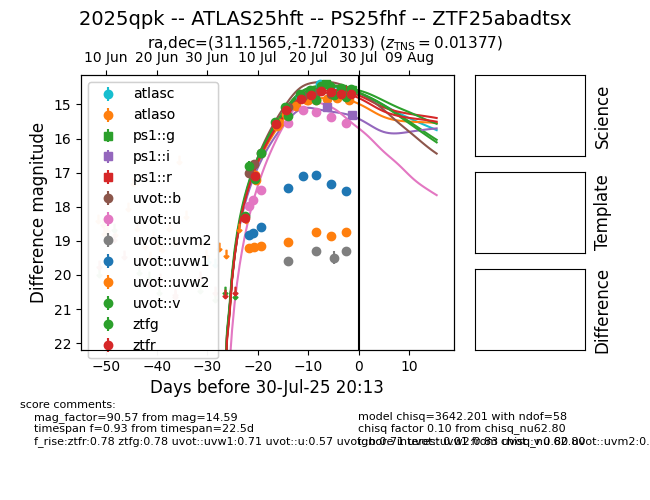

Target 2025qpk at 2025-07-30 20:13, see:
FINK: fink-portal.org/2025qpk
Lasair: lasair-ztf.lsst.ac.uk/objects/2025qpk
ALeRCE: alerce.online/object/2025qpk
TNS: wis-tns.org/object/2025qpk
YSE: ziggy.ucolick.org/yse/transient_detail/2025qpk
alt names
ZTF25abadtsx (ztf,fink)
2025qpk (tns,yse)
ATLAS25hft (atlas)
PS25fhf (panstarrs)
coordinates:
equatorial (ra, dec) = (311.1565,-1.72013)
galactic (l, b) = (45.0733,-25.81009)
photometry
last atlasc=14.39, atlaso=14.86, ps1::g=14.59, ps1::i=15.31, ps1::r=14.58, uvot::b=14.75, uvot::u=15.56, uvot::uvm2=19.29, uvot::uvw1=17.53, uvot::uvw2=18.74, uvot::v=14.79, ztfg=14.56, ztfr=14.68
2 atlasc, 12 atlaso, 3 ps1::g, 2 ps1::i, 1 ps1::r, 8 uvot::b, 8 uvot::u, 4 uvot::uvm2, 8 uvot::uvw1, 7 uvot::uvw2, 6 uvot::v, 10 ztfg, 10 ztfr detections
